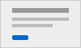

My Projects
Here are three sample projects I've built using clean structure and focus on accessibility guidelines.

HTML5 / Accessibility
Accessible Personal Portfolio
This is my first internship project. It is structured to follow semantic standards, ensuring screen reader device readability, logical keyboard tab ordering, and a zero-JS validation framework.
HTML5 / Semantic CSS
Task List Dashboard
A mock dashboard setup representing active student workflows. It organizes lists, task detail items, and calendar updates cleanly without relying on visual tables or grid frameworks.
A11y / Documentation
Web Component Guidelines
A documentation repository listing proper configurations for custom controls. Includes specific guides for sliders, menus, and buttons.